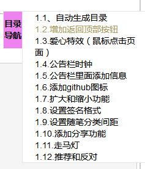
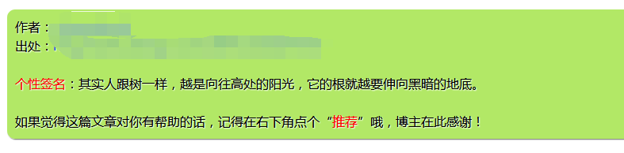
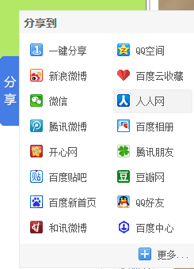

原文出处:本文由博客园博主子钦加油提供。
原文连接:https://www.cnblogs.com/zmdComeOn/p/11315677.html
原文连接:https://www.cnblogs.com/zmdComeOn/p/11315677.html
1.1、自动生成目录
效果如下：

（1）页脚js代码
首先得有js权限

<script type="text/javascript">
/*
功能：生成博客目录的JS工具
测试：IE8，火狐，google测试通过
zhang_derek
2018-01-03
*/
var BlogDirectory = {
/*
获取元素位置，距浏览器左边界的距离（left）和距浏览器上边界的距离（top）
*/
getElementPosition:function (ele) {
var topPosition = 0;
var leftPosition = 0;
while (ele){
topPosition += ele.offsetTop;
leftPosition += ele.offsetLeft;
ele = ele.offsetParent;
}
return {top:topPosition, left:leftPosition};
},
/*
获取滚动条当前位置
*/
getScrollBarPosition:function () {
var scrollBarPosition = document.body.scrollTop || document.documentElement.scrollTop;
return scrollBarPosition;
},
/*
移动滚动条，finalPos 为目的位置，internal 为移动速度
*/
moveScrollBar:function(finalpos, interval) {
//若不支持此方法，则退出
if(!window.scrollTo) {
return false;
}
//窗体滚动时，禁用鼠标滚轮
window.onmousewheel = function(){
return false;
};
//清除计时
if (document.body.movement) {
clearTimeout(document.body.movement);
}
var currentpos =BlogDirectory.getScrollBarPosition();//获取滚动条当前位置
var dist = 0;
if (currentpos == finalpos) {//到达预定位置，则解禁鼠标滚轮，并退出
window.onmousewheel = function(){
return true;
}
return true;
}
if (currentpos < finalpos) {//未到达，则计算下一步所要移动的距离
dist = Math.ceil((finalpos - currentpos)/10);
currentpos += dist;
}
if (currentpos > finalpos) {
dist = Math.ceil((currentpos - finalpos)/10);
currentpos -= dist;
}
var scrTop = BlogDirectory.getScrollBarPosition();//获取滚动条当前位置
window.scrollTo(0, currentpos);//移动窗口
if(BlogDirectory.getScrollBarPosition() == scrTop)//若已到底部，则解禁鼠标滚轮，并退出
{
window.onmousewheel = function(){
return true;
}
return true;
}
//进行下一步移动
var repeat = "BlogDirectory.moveScrollBar(" + finalpos + "," + interval + ")";
document.body.movement = setTimeout(repeat, interval);
},
htmlDecode:function (text){
var temp = document.createElement("div");
temp.innerHTML = text;
var output = temp.innerText || temp.textContent;
temp = null;
return output;
},
/*
创建博客目录，
id表示包含博文正文的 div 容器的 id，
mt 和 st 分别表示主标题和次级标题的标签名称（如 H2、H3，大写或小写都可以！），
interval 表示移动的速度
*/
createBlogDirectory:function (id, mt, st, interval){
//获取博文正文div容器
var elem = document.getElementById(id);
if(!elem) return false;
//获取div中所有元素结点
var nodes = elem.getElementsByTagName("*");
//创建博客目录的div容器
var divSideBar = document.createElement('DIV');
divSideBar.className = 'uprightsideBar';
divSideBar.setAttribute('id', 'uprightsideBar');
var divSideBarTab = document.createElement('DIV');
divSideBarTab.setAttribute('id', 'sideBarTab');
divSideBar.appendChild(divSideBarTab);
var h2 = document.createElement('H2');
divSideBarTab.appendChild(h2);
var txt = document.createTextNode('目录导航');
h2.appendChild(txt);
var divSideBarContents = document.createElement('DIV');
divSideBarContents.style.display = 'none';
divSideBarContents.setAttribute('id', 'sideBarContents');
divSideBar.appendChild(divSideBarContents);
//创建自定义列表
var dlist = document.createElement("dl");
divSideBarContents.appendChild(dlist);
var num = 0;//统计找到的mt和st
mt = mt.toUpperCase();//转化成大写
st = st.toUpperCase();//转化成大写
//遍历所有元素结点
for(var i=0; i<nodes.length; i++)
{
if(nodes[i].nodeName == mt|| nodes[i].nodeName == st)
{
//获取标题文本
var nodetext = nodes[i].innerHTML.replace(/<\/?[^>]+>/g,"");//innerHTML里面的内容可能有HTML标签，所以用正则表达式去除HTML的标签
nodetext = nodetext.replace(/ /ig, "");//替换掉所有的
nodetext = BlogDirectory.htmlDecode(nodetext);
//插入锚
nodes[i].setAttribute("id", "blogTitle" + num);
var item;
switch(nodes[i].nodeName)
{
case mt: //若为主标题
item = document.createElement("dt");
break;
case st: //若为子标题
item = document.createElement("dd");
break;
}
//创建锚链接
var itemtext = document.createTextNode(nodetext);
item.appendChild(itemtext);
item.setAttribute("name", num);
item.onclick = function(){ //添加鼠标点击触发函数
var pos = BlogDirectory.getElementPosition(document.getElementById("blogTitle" + this.getAttribute("name")));
if(!BlogDirectory.moveScrollBar(pos.top, interval)) return false;
};
//将自定义表项加入自定义列表中
dlist.appendChild(item);
num++;
}
}
if(num == 0) return false;
/*鼠标进入时的事件处理*/
divSideBarTab.onmouseenter = function(){
divSideBarContents.style.display = 'block';
}
/*鼠标离开时的事件处理*/
divSideBar.onmouseleave = function() {
divSideBarContents.style.display = 'none';
}
document.body.appendChild(divSideBar);
}
};
window.onload=function(){
/*页面加载完成之后生成博客目录*/
BlogDirectory.createBlogDirectory("cnblogs_post_body","h2","h3",20);
}
</script>（2）页面定制css代码
/*生成博客目录的CSS*/
#uprightsideBar{
font-size:14px;
font-family:Arial, Helvetica, sans-serif;
text-align:left;
position:fixed;/*将div的位置固定到距离top:50px，right:0px的位置，这样div就会处在最右边的位置，距离顶部50px*/
top:400px;
right:53px;
width: auto;
height: auto;
}
#sideBarTab{
float:left;
width:30px;
border:1px solid #e5e5e5;
border-right:none;
text-align:center;
background:rgb(238, 130, 238);
}
#sideBarContents{
float:left;
overflow:auto;
overflow-x:hidden;!important;
width:200px;
min-height:108px;
max-height:460px;
border:1px solid #e5e5e5;
border-right:none;
background:#ffffff;
}
#sideBarContents dl{
margin:0;
padding:0;
}
#sideBarContents dt{
margin-top:5px;
margin-left:5px;
}
#sideBarContents dd, dt {
cursor: pointer;
}
#sideBarContents dd:hover, dt:hover {
color:#A7995A;
}
#sideBarContents dd{
margin-left:20px;
}
1.2.增加返回顶部按钮
（1）页面定制css代码
#back-to-top {
background-color: #00CD00;
bottom: 0;
box-shadow: 0 0 6px #00CD00;
color: #444444;
padding: 10px 10px;
position: fixed;
right: 50px;
cursor: pointer;
}（2）页首html代码
<span id="back-to-top"><a href="#top">返回顶部</a></span>
1.3.爱心特效（鼠标点击页面）
鼠标点击页面效果：
把下面代码复制到公告栏里面
<!-- 爱心特效 -->
<script type="text/javascript">
(function(window,document,undefined){
var hearts = [];
window.requestAnimationFrame = (function(){
return window.requestAnimationFrame ||
window.webkitRequestAnimationFrame ||
window.mozRequestAnimationFrame ||
window.oRequestAnimationFrame ||
window.msRequestAnimationFrame ||
function (callback){
setTimeout(callback,1000/60);
}
})();
init();
function init(){
css(".heart{width: 10px;height: 10px;position: fixed;background: #f00;transform: rotate(45deg);-webkit-transform: rotate(45deg);-moz-transform: rotate(45deg);}.heart:after,.heart:before{content: '';width: inherit;height: inherit;background: inherit;border-radius: 50%;-webkit-border-radius: 50%;-moz-border-radius: 50%;position: absolute;}.heart:after{top: -5px;}.heart:before{left: -5px;}");
attachEvent();
gameloop();
}
function gameloop(){
for(var i=0;i<hearts.length;i++){
if(hearts[i].alpha <=0){
document.body.removeChild(hearts[i].el);
hearts.splice(i,1);
continue;
}
hearts[i].y--;
hearts[i].scale += 0.004;
hearts[i].alpha -= 0.013;
hearts[i].el.style.cssText = "left:"+hearts[i].x+"px;top:"+hearts[i].y+"px;opacity:"+hearts[i].alpha+";transform:scale("+hearts[i].scale+","+hearts[i].scale+") rotate(45deg);background:"+hearts[i].color;
}
requestAnimationFrame(gameloop);
}
function attachEvent(){
var old = typeof window.onclick==="function" && window.onclick;
window.onclick = function(event){
old && old();
createHeart(event);
}
}
function createHeart(event){
var d = document.createElement("div");
d.className = "heart";
hearts.push({
el : d,
x : event.clientX - 5,
y : event.clientY - 5,
scale : 1,
alpha : 1,
color : randomColor()
});
document.body.appendChild(d);
}
function css(css){
var style = document.createElement("style");
style.type="text/css";
try{
style.appendChild(document.createTextNode(css));
}catch(ex){
style.styleSheet.cssText = css;
}
document.getElementsByTagName('head')[0].appendChild(style);
}
function randomColor(){
return "rgb("+(~~(Math.random()*255))+","+(~~(Math.random()*255))+","+(~~(Math.random()*255))+")";
}
})(window,document);
</script>
1.4.公告栏时钟
公告里面
<div id="myTime">
<object classid="clsid:d27cdb6e-ae6d-11cf-96b8-444553540000" codebase="http://fpdownload.macromedia.com/pub/shockwave/cabs/flash/swflash.cab#version=8,0,0,0" width="160" height="70" id="honehoneclock" align="middle">
<param name="allowScriptAccess" value="always">
<param name="movie" value="http://chabudai.sakura.ne.jp/blogparts/honehoneclock/honehone_clock_wh.swf">
<param name="quality" value="high">
<param name="bgcolor" value="#ffffff">
<param name="wmode" value="transparent">
<embed wmode="transparent" src="http://chabudai.sakura.ne.jp/blogparts/honehoneclock/honehone_clock_wh.swf" quality="high" bgcolor="#ffffff" width="160" height="70" name="honehoneclock" align="middle" allowscriptaccess="always" type="application/x-shockwave-flash" pluginspage="http://www.macromedia.com/go/getflashplayer">
</object>
</div>
1.5.公告栏里面添加信息
公告里面
- 图片路径：可以把图片上传到你的博客相册里面，然后把图片地址复制过来就可以
<p class="gonggao"> <a style="color: blue;font-weight: bold;" href="http://www.cnblogs.com/derek1184405959/p/8579428.html">我的博客文章（目录）</a></p>
<p class="qq"> 写自己想要的一些信息</p>
<a style="color:red;" title="点此进入Django2.0官方文档" target="_Blank" href="https://docs.djangoproject.com/en/2.0/"><img src="http://images.cnblogs.com/cnblogs_com/derek1184405959/1210823/t_django.jpg" alt="zzx" class="img_avatar" width="170px" height="80px" style="border-radius:0%" > </a>css代码
.qq{
color:red;
font-size:15px;
margin:8px;
font-weight: 500;
}
.gonggao{
margin:8px;
font-size:16px;
color:blue;
}
1.6.添加github图标
页首html代码
只要把a标签里面的地址换成你自己的就可以
<a href="https://github.com/derek-zhang123/" title="我的github地址" target="_Blank" class="github-corner" aria-label="View source on Github"><svg width="80" height="80" viewBox="0 0 250 250" style="fill:#FD6C6C; color:#fff; position: absolute; top: 0; border: 0; right: 0;" aria-hidden="true"><path d="M0,0 L115,115 L130,115 L142,142 L250,250 L250,0 Z"></path><path d="M128.3,109.0 C113.8,99.7 119.0,89.6 119.0,89.6 C122.0,82.7 120.5,78.6 120.5,78.6 C119.2,72.0 123.4,76.3 123.4,76.3 C127.3,80.9 125.5,87.3 125.5,87.3 C122.9,97.6 130.6,101.9 134.4,103.2" fill="currentColor" style="transform-origin: 130px 106px;" class="octo-arm"></path><path d="M115.0,115.0 C114.9,115.1 118.7,116.5 119.8,115.4 L133.7,101.6 C136.9,99.2 139.9,98.4 142.2,98.6 C133.8,88.0 127.5,74.4 143.8,58.0 C148.5,53.4 154.0,51.2 159.7,51.0 C160.3,49.4 163.2,43.6 171.4,40.1 C171.4,40.1 176.1,42.5 178.8,56.2 C183.1,58.6 187.2,61.8 190.9,65.4 C194.5,69.0 197.7,73.2 200.1,77.6 C213.8,80.2 216.3,84.9 216.3,84.9 C212.7,93.1 206.9,96.0 205.4,96.6 C205.1,102.4 203.0,107.8 198.3,112.5 C181.9,128.9 168.3,122.5 157.7,114.1 C157.9,116.9 156.7,120.9 152.7,124.9 L141.0,136.5 C139.8,137.7 141.6,141.9 141.8,141.8 Z" fill="currentColor" class="octo-body"></path></svg></a><style>.github-corner:hover .octo-arm{animation:octocat-wave 560ms ease-in-out}@keyframes octocat-wave{0%,100%{transform:rotate(0)}20%,60%{transform:rotate(-25deg)}40%,80%{transform:rotate(10deg)}}@media (max-width:500px){.github-corner:hover .octo-arm{animation:none}.github-corner .octo-arm{animation:octocat-wave 560ms ease-in-out}}</style>
<a href="http://www.cnblogs.com/derek1184405959/" title="我的博客主页" target="_Blank" class="github-corner" aria-label="View source on Github"><svg width="80" height="80" viewBox="0 0 250 250" style="fill:#64CEAA; color:#fff; position: absolute; top: 0; border: 0; left: 0; transform: scale(-1, 1);" aria-hidden="true"><path d="M0,0 L115,115 L130,115 L142,142 L250,250 L250,0 Z"></path><path d="M128.3,109.0 C113.8,99.7 119.0,89.6 119.0,89.6 C122.0,82.7 120.5,78.6 120.5,78.6 C119.2,72.0 123.4,76.3 123.4,76.3 C127.3,80.9 125.5,87.3 125.5,87.3 C122.9,97.6 130.6,101.9 134.4,103.2" fill="currentColor" style="transform-origin: 130px 106px;" class="octo-arm"></path><path d="M115.0,115.0 C114.9,115.1 118.7,116.5 119.8,115.4 L133.7,101.6 C136.9,99.2 139.9,98.4 142.2,98.6 C133.8,88.0 127.5,74.4 143.8,58.0 C148.5,53.4 154.0,51.2 159.7,51.0 C160.3,49.4 163.2,43.6 171.4,40.1 C171.4,40.1 176.1,42.5 178.8,56.2 C183.1,58.6 187.2,61.8 190.9,65.4 C194.5,69.0 197.7,73.2 200.1,77.6 C213.8,80.2 216.3,84.9 216.3,84.9 C212.7,93.1 206.9,96.0 205.4,96.6 C205.1,102.4 203.0,107.8 198.3,112.5 C181.9,128.9 168.3,122.5 157.7,114.1 C157.9,116.9 156.7,120.9 152.7,124.9 L141.0,136.5 C139.8,137.7 141.6,141.9 141.8,141.8 Z" fill="currentColor" class="octo-body"></path></svg></a><style>.github-corner:hover .octo-arm{animation:octocat-wave 560ms ease-in-out}@keyframes octocat-wave{0%,100%{transform:rotate(0)}20%,60%{transform:rotate(-25deg)}40%,80%{transform:rotate(10deg)}}@media (max-width:500px){.github-corner:hover .octo-arm{animation:none}.github-corner .octo-arm{animation:octocat-wave 560ms ease-in-out}}</style>
1.7.扩大和缩小功能
效果：
点“扩大”，左边的侧边栏会隐藏，点“缩小”侧边栏又会恢复
（1）页首html代码
<div id="divExpandViewArea" onclick="$('#main_container').css({'margin-left':'-200px'});$('#leftmenu').css({'display':'none'});">扩大</div>
<div id="divCollapseViewArea" onclick="$('#main_container').css({'margin-left':'0px'});$('#leftmenu').css({'display':'block'});">缩小</div>（2）页面定制css样式
#divExpandViewArea{
position: fixed;
color: white;
padding: 10px 10px;
left: 0px;
top: 547px;
cursor: pointer;
opacity: 0.9;
background-color: #68228B;
}
#divCollapseViewArea{
position: fixed;
color: white;
padding: 10px 10px;
left: 0px;
top: 586px;
cursor: pointer;
opacity: 0.9;
background-color: #68228B;
}
1.8.设置签名格式
效果如下：

页面定制css样式
/* 设置签名格式 */
#MySignature {
display: none;
background-color: #B2E866;
border-radius: 10px;
box-shadow: 1px 1px 1px #6B6B6B;
padding: 10px;
line-height: 1.5;
text-shadow: 1px 1px 1px #FFF;
font-size: 16px;
font-family: 'Microsoft Yahei';
}
1.9.设置随笔分类间距
左侧随笔分类之间间距
页面定制css样式
/* 左侧最新随笔 */
#CatList_LinkList_0_Link_0{
}
#CatList_LinkList_0_Link_1{
margin-top:10px;
}
#CatList_LinkList_0_Link_2{
margin-top:10px;
}
#CatList_LinkList_0_Link_3{
margin-top:10px;
}
#CatList_LinkList_0_Link_4{
margin-top:10px;
}
#CatList_LinkList_0_Link_5{
margin-top:10px;
}
#CatList_LinkList_0_Link_6{
margin-top:10px;
}
#CatList_LinkList_0_Link_7{
margin-top:10px;
}
#CatList_LinkList_0_Link_8{
margin-top:10px;
}
1.10.添加分享功能
效果如下：

公告栏里面
<script>window._bd_share_config={"common":{"bdSnsKey":{},"bdText":"","bdMini":"2","bdMiniList":false,"bdPic":"","bdStyle":"0","bdSize":"16"},"slide":{"type":"slide","bdImg":"6","bdPos":"right","bdTop":"400"},"image":{"viewList":["qzone","tsina","tqq","renren","weixin"],"viewText":"分享到：","viewSize":"16"}};with(document)0[(getElementsByTagName('head')[0]||body).appendChild(createElement('script')).src='http://bdimg.share.baidu.com/static/api/js/share.js?v=89860593.js?cdnversion='+~(-new Date()/36e5)];</script>
1.11.走马灯
页首html代码
<div id="i1" style="color:red;font-size:13px;padding:5px;">大江东去，浪淘尽，千古风流人物。故垒西边，人道是，三国周郎赤壁。乱石穿空，惊涛拍岸，卷起千堆雪。江山如画，一时多少豪杰。遥想公瑾当年，小乔初嫁了，雄姿英发。羽扇纶巾，谈笑间，樯橹灰飞烟灭。故国神游，多情应笑我，早生华发。人生如梦，一尊还酹江月。</div>
<script>
function func(){
var tag = document.getElementById('i1');
var content = tag.innerText;
var f = content.charAt(0);
var l = content.substring(1,content.length);
var new_content = l + f;
tag.innerText = new_content;
}
setInterval('func()',1600);
</script>
1.12.推荐和反对
页面定制css
/*推荐和反对*/
#div_digg {
padding: 10px;
position: fixed;
_position: absolute;
z-index: 1000;
bottom: 20px;
right: 0;
_right: 17px;
border: 1px solid #D9DBE1;
background-color: #FFFFFF;
filter: alpha(Opacity=80);
-moz-opacity: 1;
opacity: 1;
}
.icon_favorite {
background: transparent url('http://files.cnblogs.com/files/jackson0714/kj.gif') no-repeat 0 0;
padding-left: 16px;
}